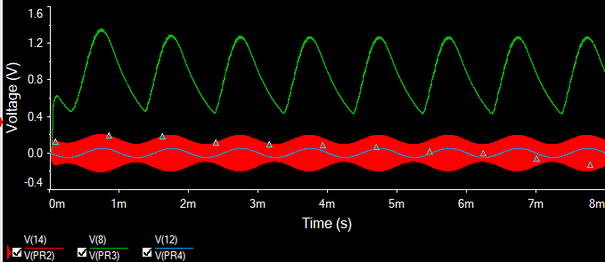

About Me
Hello, my name is Arsh, I'm an electrical engineering student studying at the New Jersey Institute of Technology (NJIT) with a track of RF design.
Why RF? My first taste of it was when taking my electromagnetics class. It was hard, but it also got me interested with the field.
This last summer, I was motivated to get my ham radio license, and am currently building an AM radio transceiver. I want to keep going, with work experience and more classes to develop myself for a professional career.
What Else?
IEEE: One of my favorite commitments is as part of NJIT's IEEE Student Branch. We serve the ECE body here at NJIT with kits and maintain one of the largest rooms spaces of any club on campus. From now until next year, I'm the secretary for the branch, and previously was the project room manager. This has entailed lots of cleaning and documentation. I find it pretty rewarding to manage the internal committee now, which is a team of me and six other students making sure IEEE's space is kept in good condition, and maintaining all of the club's valuables
Eta Kappa Nu (HKN): HKN's an honor society that I was inducted into earlier this year (2025). I plan to be the tutor for the electromagnetics class (ECE361) the next semester to help many of my classmates prepare for the exams better than I did.
Antenna and Propagation Society (APS): APS is a new club coming to NJIT. We are currently in the process of creating the club, going through both the procedures in the national society and also through NJIT's student senate in order to make it.
Skills
Technical Skills
- Spice Simulation: I use NI Multisim and recently started using ltSpice for spice simulations
- Computer Aided Design (CAD): I've mainly used Autodesk Inventor, although I've worked a little with AutoCAD as well
- PCB Design: My newest tool, I'm currently learning how to use Altium Designer for schematics and pcb designing
Programming
- Python: It's been a while since I've used python, but I will be taking a class in machine learning using python
- C++: Primarily in the context of microcontrollers like Arduino and ESP32
- MATLAB: Used for my classes and I've started using it for its RF toolboxes
Other Skills
- Ham Radio Operation (General License): My callsign is KE2GIG, I've been meaning to start next semester or when I can complete my own radio
- Team Collaboration: I work well with teams, like I have in a number of my projects (listed below), and in clubs
Projects
AM Radio Transceiver
- I started this project back in July; the goal is to make a fully working AM transceiver entirely from scratch
- It's pretty ambitious, but I've been chipping away at it slowly and it's been making me learn about all the softwares used in industry
- The next steps are in finishing the ltSpice simulation and also working on the pcb in Altium Designer
This is the first draft I made using NI Multisim. The problem with this software is that it isn't able to compute higher than several megahertz frequencies. I'm currently redoing the numbers and running it in ltSpice
This is the results I got from this circuit. It matches the circuit I wanted, but I will be redoing this in ltSpice to get the results on the frequency I need
I posted a photo to show the work that can be done on MATLAB. Of course, not all the tiles I'm showing were needed, I just wanted to show what it's capable of apart from being able to help me with the sizes
Contact
Email: arshbhamla@gmail.com